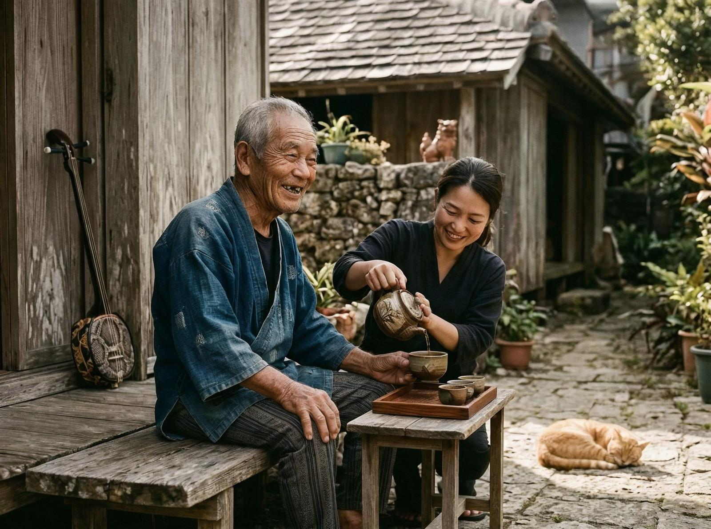
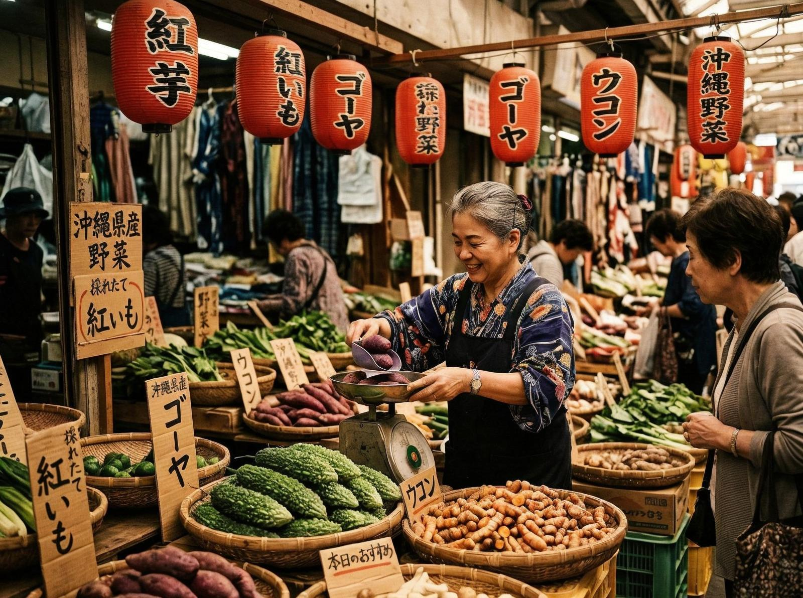

Dacă te-ai duce în Okinawa și ai cere unui localnic câți ani are, s-ar putea să răspundă cu 85 sau 90. Dacă ai întreba de ce arată atât de tânăr, ar zâmbi și ar spune că are doar 40 de ani. Nu e o glumă. Oamenii din Okinawa au o viziune diferită despre vârstă. Și, mai important, o viziune diferită despre viață.
Reține asta: Okinawa are cea mai mare concentrație de centenari din lume. Nu doar câțiva. Mii. Și nu doar oameni care trăiesc 100 de ani. Oameni care trăiesc 100 de ani, fac sport, cultivă legume, petrec timp cu familia și râd la poveștile bătrânilor din sat.
Să începem cu ce știm. Okinawa e o insulă mică din sudul Japoniei. Are 106 km lungime și o populație de aproximativ 1,4 milioane de oameni. E un loc frumos — plaje albastre, dealuri verzi, apă caldă tot anul. Dar nu asta o face specială. O face faptul că oamenii de acolo trăiesc mai mult decât oriunde altundeva.

Și nu doar trăiesc mai mult. Trăiesc mai bine.
Știința zice: e genetica. E dieta. E stilul de viață. Realitatea, însă, e mai complicată. Cercetătorii au venit în Okinawa de zeci de ani. Au analizat sângele, au măsurat nivelurile de colesterol, au interogat localnicii despre obiceiurile lor. Au găsit câteva reguli simple, dar puternice.
Prima: okinawanii au un ikigai. E un cuvânt japonez care nu se traduce direct. Înseamnă ceva gen "motivul pentru care te trezești dimineața". Oamenii din Okinawa au un motiv clar pentru a trăi. E cultivarea legumelor. E îngrijirea nepoților. E participarea la evenimentele comunitare. Orice ar fi, are sens.

Și iată partea interesantă — pentru că studiile arată că oamenii care au un ikigai trăiesc mai mult. Nu e un efect placebo. E real. Când ai un motiv pentru a trăi, corpul tău răspunde.
A doua: dieta. Okinawanii mănâncă mult tofu și legume. Nu multă carne. Nu mult lactate. Nu mult zahăr. O dietă simplă, echilibrată, bazată pe ce crește în grădină. Problema e că dieta e doar o parte din ecuație. Partea mai interesantă e cum mănâncă.
Okinawanii mănâncă încet. Nu se grăbesc. Se bucură de mâncare. Se opresc când sunt sătui, nu când plăcile sunt goale. O regulă simplă, dar greu de respectat într-o lume care îți spune să mănânci repede și mult.
Și uite ce e interesant: okinawanii au o regulă numită "hara hachi bu". Înseamnă "mănâncă până când ești 80% plin". Nu 100%. 80%. Restul îl lași pentru data viitoare. E o regulă care sună restrictivă, dar în realitate e o regulă de libertate. Când nu mănânci până la saturație completă, te simți mai bine. Ai mai multă energie. Te simți mai puțin greoi.
A treia: conexiunea socială. Okinawanii nu sunt singuri. Au moai — grupuri de prieteni din copilărie care se întâlnesc regulat. Vorbesc. Râd. Se sprijină reciproc. Nu e doar o întâlnire socială. E o rețea de suport care îți dă un motiv pentru a trăi.
Știința zice: e doar cultura. Realitatea, însă, e că conexiunea socială are efecte fizice. Studiile arată că oamenii cu conexiuni sociale puternice trăiesc mai mult, au imunitate mai bună, sunt mai fericiți. Nu e doar o impresie. E măsurabil.
Există și alte reguli. Okinawanii fac sport zilnic. Nu neapărat la sală. Cultivă grădina. Merg pe jos. Dansează în grupuri. Orice mișcare, atâta timp cât e constantă. Problema e că sportul e doar o parte. Partea mai importantă e că sportul e integrat în viața zilnică. Nu e o sarcină. E un mod de viață.
Și totuși, problema cu Okinawa nu e că oamenii trăiesc 100 de ani. Problema e că sunt fericiți să o facă. Nu e o viață lungă și plictisitoare. E o viață lungă și plină de sens.
E complicat, dar când vezi un fermier de 95 de ani care râde cu nepoții lui, înțelegi că secretul nu e în ce mănâncă sau ce exerciții face. Secretul e în cum percepe viața. Ca pe o bucurie, nu ca pe o obligație.
Pentru okinawani, vârsta nu e un număr. E o etapă. Când ai 80 de ani, ești în etapa "senior". Când ai 90 de ani, ești în etapa "bătrân". Când ai 100 de ani, ești în etapa "înțelept". Și în fiecare etapă, ai un rol. Ai o responsabilitate. Ai un motiv pentru a continua.
Probabil că nu putem reproduce Okinawa în alte locuri. Nu putem clona cultura, dieta, stilul de viață. Dar putem învăța ceva. Putem învăța că viața lungă nu e doar despre ani. E despre cum trăiești acei ani. E despre conexiune, despre sens, despre bucurie.
Okinawa e un exemplu. Un model de cum ar trebui să fie viața. Nu perfectă, dar aproape. O viață lungă, fericită, plină de sens. Și, poate cel mai important, o viață pe care o trăiești cu zâmbetul pe buze.
Nu știu ce înseamnă asta pentru restul lumii. Dar știu că, când te uiți la un fermier de 100 de ani care cultivă grădina lui cu dragoste, îți dai seama că așteptarea nu e la moarte. E la următoarea zi.